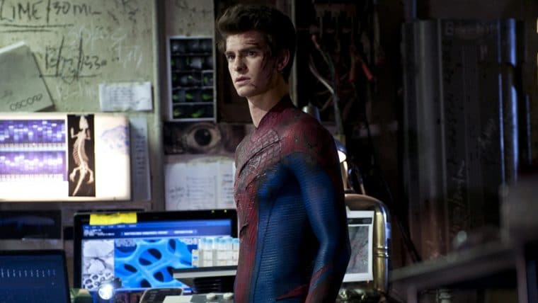

Filmes do Homem-Aranha

- Homem-Aranha (2002) - Tobey Maguire. O filme que iniciou a franquia com Sam Raimi.
- Homem-Aranha 2 (2004) - Tobey Maguire. Peter equilibra sua vida pessoal com ser herói.
- Homem-Aranha 3 (2007) - Tobey Maguire. O terceiro filme da trilogia original.
- The Amazing Spider-Man (2012) - Andrew Garfield. Uma nova versão das origens de Peter.
- The Amazing Spider-Man 2 (2014) - Andrew Garfield. Peter enfrenta novos vilões.
- Homem-Aranha: De Volta ao Lar (2017) - Tom Holland. Peter se junta ao MCU oficial.
- Homem-Aranha: Longe de Casa (2019) - Tom Holland. Aventura internacional após Vingadores.
- Homem-Aranha: Sem Volta para Casa (2021) - Tom Holland. Multiverso com vilões de outras versões.